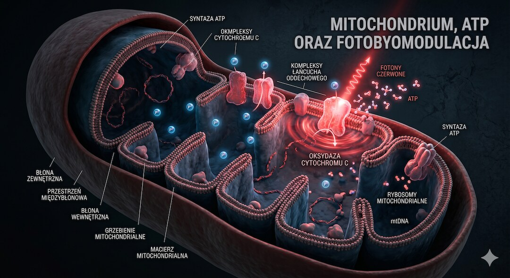
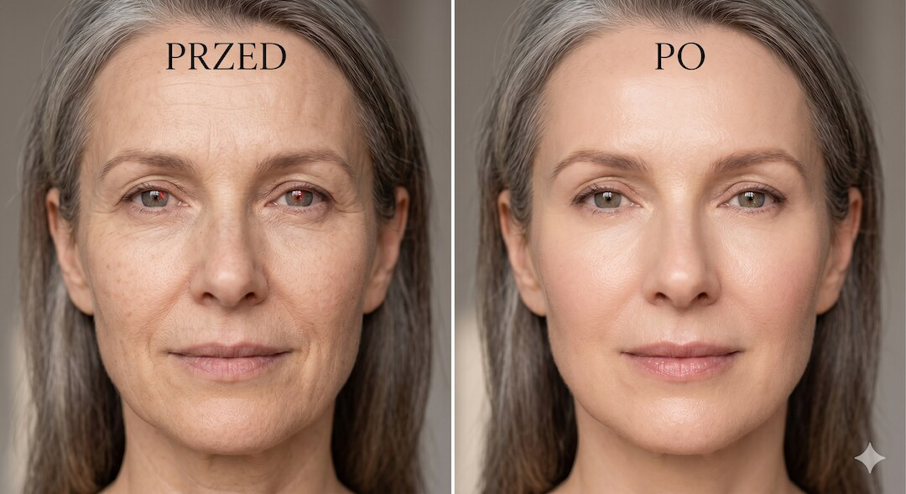
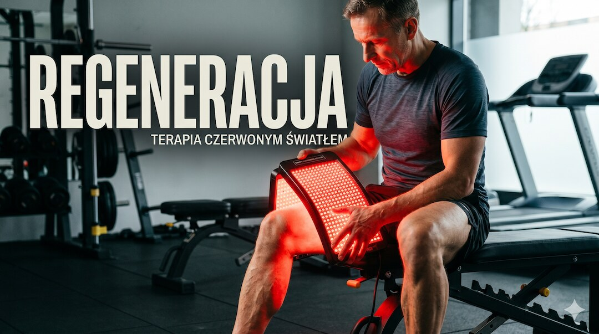
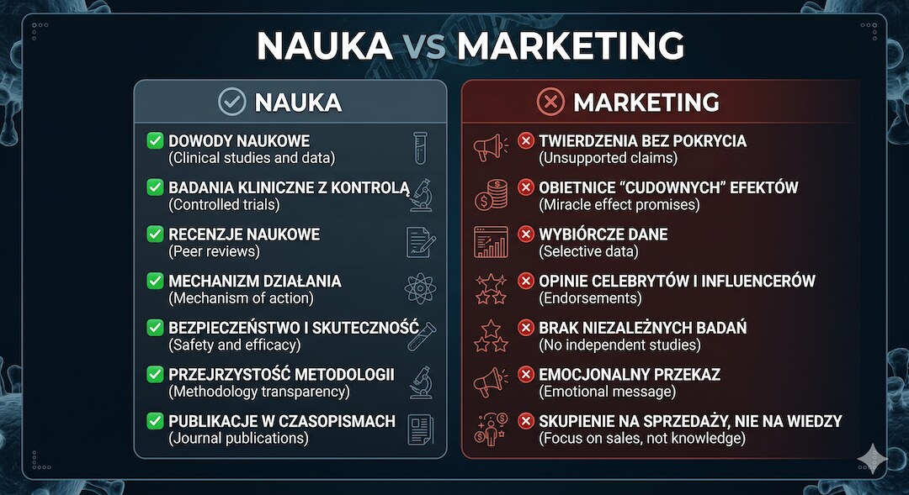
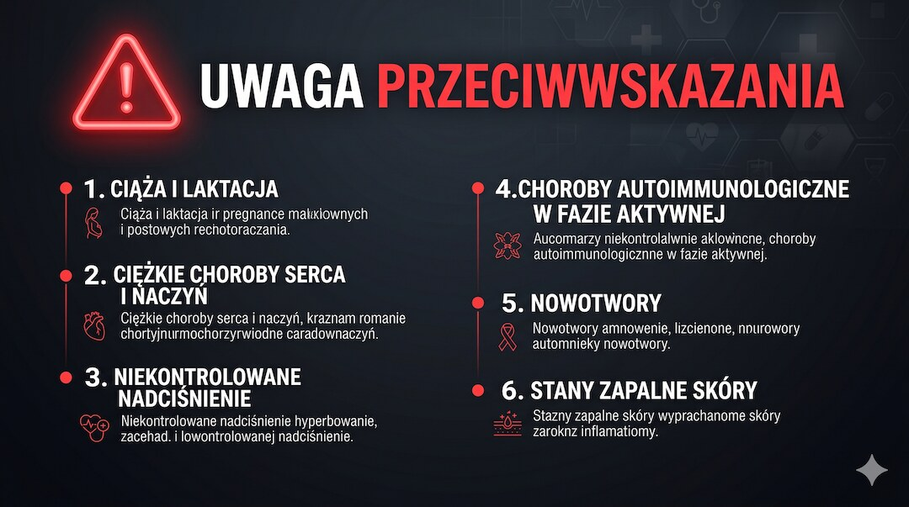
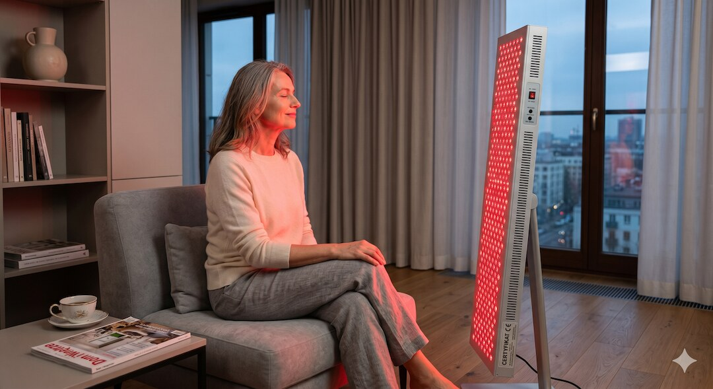
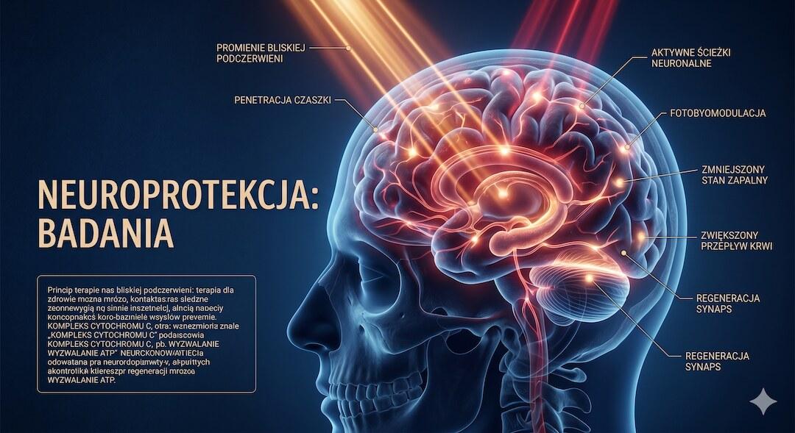

Panele LED w domu, maski na twarz, lampy w gabinetach - terapia swiatlem czerwonym (RLT) robi zawrotna kariere. Ale czy to realna interwencja biologiczna spowalniajaca starzenie komorek, czy kosztowny placebo-gadget? Sprawdzamy, co faktycznie wynika z badan klinicznych - i co to oznacza dla osob po piedziesiatce.
Szybka odpowiedź
Po 50-tce w temacie „Terapia swiatlem czerwonym: gadget czy nauka? – praktyczny” najlepiej działa plan oparty na danych: najpierw sprawdź punkt wyjścia, potem wdrażaj zmiany krokami przez 4-8 tygodni i kontroluj efekt. Jeśli pojawia się ból, pogorszenie wyników albo brak postępu przez 2-3 tygodnie, zmniejsz obciążenie i
Kluczowe wnioski
Kluczowe wnioski
- RLT (660-850 nm) aktywuje cytochrom c oksydaze w mitochondriach, co zwieksza produkcje ATP - mechanizm jest biologicznie wiarygodny i potwierdzony in vitro oraz w badaniach klinicznych na skorze.
- Metaanalizy RCT potwierdzaja redukcje zmarszczek i poprawe jakosci skory po regularnych sesjach (2x tygodniowo przez 8-12 tygodni). Efekty ustepuja po zaprzestaniu terapii.
- Brak dowodow klinicznych na ogolnoustrojowe odmlodzenie lub wydluzenie zycia u ludzi - nie mylmy obiecujacych danych z komorek i zwierzat z udowodnionym efektem anty-aging.
- Przeciwwskazania sa realne: aktywny nowotwor, fotouczulajace leki (tetracykliny, retinoidy), padaczka, nieleczona nadczynnosc tarczycy - konsultacja z lekarzem przed zakupem urzadzenia.
Czym wlasciwie jest terapia swiatlem czerwonym i jak dziala na poziomie komorki?
Terapia swiatlem czerwonym (ang. Red Light Therapy, RLT ) - naukowo nazywana fotobiomodulacja (PBM) - polega na naswietlaniu tkanek swiatlem o dlugosci fali 620-700 nm (czerwonym) lub 700-1100 nm (bliska podczerwien, NIR). Kluczem do zrozumienia mechanizmu dzialania jest to, ze swiatlo w tym zakresie jest pochlanianie przez cytochrom c oksydaze (CcO) - enzym w wewnetrznej blonie mitochondriow, odpowiedzialny za ostatni etap produkcji energii komorkowej (ATP).
W uproszczeniu: foton czerwonego swiatla trafia do mitochondrium, aktywuje CcO, co przyspiesza lancuch oddechowy i zwieksza synteze ATP. Jednoczesnie regulowany jest tzw. stan redoks komorki - obniza sie poziom reaktywnych form tlenu (ROS), a aktywowane zostaja sciezki sygnalowe zwiazane z regeneracja tkanek, w tym czynnik wzrostu TGF-beta1. Mechanizm ten zostal opisany przez naukowcow z National Institute on Aging (NIA) podczas specjalnego warsztatu w 2023 roku i jest uznawany za biologicznie wiarygodny.
Wazne zastrzezenie: samo to, ze mechanizm jest wiarygodny, nie oznacza automatycznie, ze domowe lampki LED dostarczaja wystarczajacej dawki energii, by wywolac ten efekt. Dawka (irradiancja, mW/cm2 x czas) ma znaczenie krytyczne, a rynek konsumencki jest pelny urzadzen o niepotwierdzonych parametrach. Plan ruchu 3x30 po 50 pomaga laczyc regeneracje z codzienna aktywnoscia.

Co badania kliniczne mowia o wplywie RLT na starzenie skory po 50-tce?
Skora to obszar, w ktorym fotobiomodulacja ma najlepiej udokumentowane efekty kliniczne. Badanie opublikowane w 2023 roku w Skin Research and Technology (Couturaud i wsp. ) wykazalo, ze stosowanie maski LED emitujacej czerwone swiatlo (630 nm, 15,6 J/cm2) przez 3 miesiace - dwa razy w tygodniu po 12 minut - przynioslo progresywna, mierzalna poprawe jakosci skory u wszystkich uczestniczek, w tym redukcje zmarszczek.
Co istotne, efekty utrzymywaly sie jeszcze miesiac po zakonczeniu terapii.
Metaanaliza Ngoc i wsp. (2023) potwierdzila redukcje zmarszczek okoloocznych o 26% po 4 tygodniach (2 sesje/tydzien, 20 min/sesja). Inne analizowane RCT wykazaly istotne statystycznie zmniejszenie liczby zmarszczek po 12 tygodniach codziennych zabiegow. Mechanizm to stymulacja fibroblastow do produkcji kolagenu i elastyny, zmniejszenie dysfunkcji mitochondrialnej oraz redukcja stanu zapalnego w warstwie skornej wlasciwej.
Badanie opublikowane w Photobiomodulation, Photomedicine, and Laser Surgery (Mota i wsp., 2023) wykazalo redukcje objetosci zmarszczek okoloocznych o 30% w randomizowanym badaniu kontrolowanym. Dla osob po 50-tce, u ktorych skora naturalnie traci kolagen w tempie ok. 1% rocznie, sa to wyniki warte uwagi - choc wciaz dotycza stosunkowo malych prob klinicznych.
- Redukcja zmarszczek mierzona obiektywnie: -26% do -30% w RCT (2023)
- Stymulacja syntezy kolagenu przez fibroblasty - mechanizm potwierdzony in vitro i klinicznie
- Zmniejszenie dysfunkcji mitochondrialnej w komorkach skory - jeden z markerow starzenia
- Efekty widoczne po min. 8-12 tygodniach regularnych sesji, nie po jednorazowym zabiegu
- Wyniki dotycza glownie twarzy; dane dla innych obszarow ciala sa slabiej udokumentowane

Czy RLT pomaga w regeneracji miesni i redukcji bolu - co mowi medycyna sportowa?
Poza skora, fotobiomodulacja jest intensywnie badana w kontekscie regeneracji miesniowej i lagodzenia bolu - obszarow szczegolnie istotnych dla aktywnych osob po piecdziesiatce, u ktorych czas regeneracji po wysilku naturalnie sie wydluza. Metaanaliza z 2023 roku (baza PubMed, 19 RCT, n=672) wykazala, ze PBMT zastosowana przed cwiczeniami istotnie zmniejsza bol miesniowy (MD: -12,27 punktu w skali bolu), choc autorzy ocenili pewnosc dowodow jako niska ze wzgledu na heterogenicznosc protokolow.
Przeglad parasolowy opublikowany w Systematic Reviews (2025), obejmujacy metaanalizy RCT dla wielu wskizan zdrowotnych, potwierdzil skutecznosc PBM w leczeniu bolu i stanu zapalnego - jednak z zastrzezeniem, ze jakosc metodologiczna wielu wlaczonych badan byla umiarkowana. W zakresie bolu stawu kolanowego (osteoartroza) przeglad Oliveira i wsp. (2024) wykazal istotna redukcje bolu i niepelnosprawnosci. Aktywnosc fizyczna po piecdziesiatce i RLT moga sie uzupelniac, ale nie zastepowac.
Dla praktyka oznacza to: RLT moze skrocic czas regeneracji po intensywnym treningu i zmniejszyc bol miesniowy, ale nie jest substytutem rozgrzewki, progresji treningowej ani odpowiedniego nawodnienia. Efekt zalezy od parametrow urzadzenia i lokalizacji naswietlania.

Czy mozna odwrocic starzenie komorkowe? Gdzie nauka stawia granice?
Marketing urzadzen RLT chetnie uzywa sformulowania odmlodzenie komorkowe i biohacking mitochondriow. Tymczasem eksperci z NIA, ktorzy w 2023 roku podsumowali stan wiedzy o fotobiomodulacji, podkreslaja wyraznie: brak jakichkolwiek badan klinicznych na ludziach, ktore wykazalyby, ze RLT wydluza zycie lub poprawia tzw. healthspan w ogolnoustrojowym sensie. Dane z modeli komorkowych i zwierzecych sa obiecujace, ale droga od petri dish do potwierdzenia efektu u szescdziesieciolatki jest dluga.
Starzenie komorkowe to zlozony, wieloczynnikowy proces: skracanie telomerow, akumulacja komorek senescentnych, dysfunkcja mitochondriow, stres oksydacyjny, inflammaging (przewlekly niski stan zapalny). Fotobiomodulacja moze adresowac jedynie wybrany fragment tego mechanizmu - dysfunkcje mitochondrialna i redukcje ROS. Nie ma dowodow, ze wplywa na telomery czy oczyszczanie komorek senescentnych u ludzi. Warto tez pamietac, ze dieta przeciwzapalna i regularny ruch maja duzo lepiej udokumentowany wplyw na inflammaging niz jakiekolwiek urzadzenie swietlne.
Wniosek dla racjonalnego konsumenta: RLT to nie panaceum i nie magiczne cofanie starzenia. To narzedzie o waskim, ale realnym potencjale terapeutycznym - szczegolnie dla skory i regeneracji miesniowo-stawowej. Oczekiwanie rewolucji biologicznej po 10 minutach przed panelem LED to myslenie zyczeniowe niepoparte nauka.
- Brak RCT potwierdzajacych ogolnoustrojowe odmlodzenie u ludzi - tylko dane z komorek i zwierzat
- RLT moze adresowac dysfunkcje mitochondrialna i ROS - ale starzenie ma wiele niezaleznych mechanizmow
- Najlepiej udokumentowane zastosowania: skora twarzy, bol miesniowo-stawowy, gojenie ran
- Ruch, dieta i sen maja szerszy wplyw na biomarkery starzenia niz RLT

Kto nie powinien korzystac z RLT i jakie sa realne przeciwwskazania?
Terapia swiatlem czerwonym jest powszechnie uznawana za bezpieczna dla zdrowych doroslych - nie emituje promieniowania jonizujacego, nie uszkadza DNA i nie powoduje mutacji (w przeciwienstwie do UV). Badanie przegladowe w Aesthetic Surgery Journal (Glass, 2023) oceniajace bezpieczenstwo onkologiczne RLT nie wykazalo ryzyka indukcji nowotworow. Jednak istnieje kilka kategorii, w ktorych stosowanie wymaga konsultacji lekarskiej lub jest przeciwwskazane.
Bezwzgledna ostroznosc: aktywna choroba nowotworowa lub historia nowotworu skory (stymulacja komorkowa moze byc niepozadana), padaczka (pulsujace swiatlo moze byc czynnikiem wyzwalajacym napad), przyjmowanie lekow fotouczulajacych: tetracykliny, fluorochinolony, retinoidy, niektore leki psychiatryczne. Bezposrednie naswietlanie oczu jest zawsze przeciwwskazane - szczegolnie przy jaskrze, zacrcie lub po operacjach okulistycznych.
Dla osob po 50-tce, ktore czesto stosuja wiele lekow przewlekle, weryfikacja listy przyjmowanych preparatow pod katem fotouczulenia jest krokiem koniecznym przed zakupem urzadzenia. Lekarz pierwszego kontaktu lub farmaceuta moze szybko ocenic ryzyko. Pamietaj tez, ze leki a aktywnosc fizyczna - i nie tylko aktywnosc - moga wchodzic w interakcje z nowymi metodami terapeutycznymi.
- Aktywny nowotwor lub historia nowotworu skory - wymagana zgoda onkologa
- Leki fotouczulajace (tetracykliny, retinoidy, fluorochinolony, niektorejantydepresanty)
- Padaczka - pulsujace swiatlo moze wyzwolic napad
- Choroby tarczycy - unikac naswietlania okolicy szyi bliska podczerwienia
- Glaukoma, zacma, stany po operacjach oka - nie naswietlac bezposrednio oczu
- Otwarte rany, aktywne infekcje skory, oparzenia - nie stosowac lokalnie

Jak wybrac urzadzenie i jaki protokol moze przyniesc efekty?
Rynek urzadzen RLT dla konsumentow jest ogromny i nieuregulowany - od masek za 150 zl po panele za kilka tysiecy zlotych. Kluczowy parametr to irradiancja, czyli moc promieniowania padajacego na skore, wyrazona w mW/cm2. Skuteczne klinicznie protokoly stosowaly zazwyczaj dawke 15-25 J/cm2 per sesje.
Urzadzenia, ktore nie podaja tej wartosci lub podaja ja jedynie dla odleglosci kilku centymetrow od panelu, sa praktycznie niemozliwe do oceny skutecznosci. Certyfikat CE lub clearance FDA.
Protokol, ktory ma pokrycie w badaniach klinicznych na skorze twarzy: 2-3 sesje tygodniowo, 10-20 minut na sesje, w odleglosci wskazanej przez producenta (zwykle 10-30 cm od panelu), przez minimum 8-12 tygodni. Efekty nie sa natychmiastowe - pierwsze zmiany jakosci skory opisywano po 4-6 tygodniach. Stosowanie urzadzenia raz i oczekiwanie cudu jest klasycznym bledem konsumenckim.
Warto tez wiedziec, ze pielegnacja skory po 50-tce jest zlozonadRLT moze byc wartosciowym uzupelnieniem rutyny, ale nie zastapi filtrow SPF, nawilzania, snu i diety bogatej w antyoksydanty. Polaczenie tych elementow daje synergie, ktorej zadne urzadzenie samo w sobie nie odtworzy.

Czy RLT moze wspierac zdrowie mozgu i nastroj u osob po 50-tce?
Jednym z najbardziej obiecujacych - choc wciaz wstepnych - obszarow badan PBM jest neuroprotekcja. Przeglad systematyczny opublikowany w Alzheimer's Research and Therapy (Huang, Hamblin, Zhang, 2024) ocenial modele zwierzece choroby Alzheimera leczone fotobiomodulacja: wyniki byly pozytywne, ale autorzy podkreslili, ze translacja na populacje ludzka wymaga dobrze zaprojektowanych RCT.
Metaanaliza z 2023 roku (Gao i wsp. ) ocenila skutecznosc PBM u osob z zaburzeniami funkcji poznawczych zwiazanymi z wiekiem - wyniki byly obiecujace, ale.
Mechanizm proponowany dla efektow neuroprotekcyjnych to przenikanie bliskiej podczerwieni (850 nm) przez tkanke kostna czaszki i dotarcie do kory przedczolowej - co zostalo potwierdzone w badaniach nad penetracja tkanek. Jednak skutecznosc kliniczna przeczaszkowej PBM u ludzi jest wciaz przedmiotem debaty. Nie istnieje zaden domowy panel scienny, ktory skutecznie dostarczyby dawke terapeutyczna do mozgu - to wazne zastrzezenie wobec niektorych twierdzen marketingowych.
Podsumowujac: neuroprotekcyjny potencjal RLT jest interesujacy naukowo, ale niepotwierdzony klinicznie w wystarczajacym stopniu, aby rekomendowac stosowanie urzadzen domowych w tym celu. Posredni efekt poprawy snu i nastroju - obserwowany przez czesc uzytkownikow - moze czesciowo wynikac z poprawy cyrkulacji i redukcji bolu, co jest lepiej udokumentowane.

Najczęściej zadawane pytania
Najczęściej zadawane pytania
Czy terapia swiatlem czerwonym naprawde dziala na zmarszczki?
Tak - w zakresie skory twarzy mamy najlepsze dowody kliniczne. Randomizowane badania kontrolowane i metaanalizy (2023) wykazaly redukcje zmarszczek o 26-30% po 8-12 tygodniach regularnych sesji (2x tygodniowo). Efekt wynika ze stymulacji syntezy kolagenu przez fibroblasty i poprawy funkcji mitochondrialnej komorek skory. Efekty nie sa trwale bez kontynuacji terapii.
Warto przeczytać też: trening siłowy, dieta po 50-tce, sen i regeneracja.
Powiązane tematy: trening siłowy, dieta po 50-tce, sen i regeneracja, suplementacja.
Powiązane tematy: trening siłowy, dieta po 50-tce, sen i regeneracja, suplementacja.
Ile czasu zajmuje zauwaZenie efektow terapii RLT?
Pierwsze mierzalne zmiany jakosci skory opisywano po 4-6 tygodniach. Pelne efekty kliniczne obserwowano po 8-12 tygodniach sesji 2-3 razy w tygodniu. Jednorazowe lub sporadyczne zabiegi nie przynosza mierzalnych efektow - skuteczna fotobiomodulacja wymaga dawki skumulowanej.
Czy terapia swiatlem czerwonym jest bezpieczna dla osob po 50-tce?
Dla zdrowych doroslych - generalnie tak. RLT nie emituje promieniowania jonizujacego ani UV, nie uszkadza DNA. Jednak osoby z aktywnymi nowotworami, padaczka, chorobami tarczycy lub przyjmujace leki fotouczulajace (tetracykliny, retinoidy) powinny skonsultowac sie z lekarzem przed rozpoczeciem terapii. Nigdy nie nalezy naswietlac bezposrednio oczu.
Jakie dlugosci fali sa skuteczne w terapii swiatlem?
Najlepiej udokumentowane terapeutycznie to: 630-660 nm (czerwien, penetracja skory wlasciwej, fibroblasty, kolagen) i 810-850 nm (bliska podczerwien, glebsza penetracja, mitochondria miesni i stawow). Urzadzenia laczace obie dlugosci fali sa czestym wyborem klinicznym.
Czy tanszy panel LED da te same efekty co drogi?
Niekoniecznie. Kluczowy parametr to irradiancja (mW/cm2) - tansze urzadzenia czesto nie osiagaja dawki terapeutycznej. Szukaj urzadzen z certyfikatem CE lub FDA clearance oraz niezaleznie zweryfikowana irradiancja. Cena nie gwarantuje skutecznosci - techniczna specyfikacja tak.
Czy RLT moze zastapic aktywnosc fizyczna w walce ze starzeniem?
Zdecydowanie nie. Regularna aktywnosc fizyczna ma wielokrotnie lepiej udokumentowany wplyw na biomarkery starzenia, funkcje metaboliczne i zdrowie ukladu krazenia niz jakiekolwiek urzadzenie swietlne. RLT moze byc uzupelnieniem - np. w regeneracji po treningu - ale nigdy substytutem ruchu.
Źródła
Źródła po 50-tce warto wdrażać krok po kroku i od razu łączyć teorię z praktyką. Dzięki temu łatwiej utrzymać regularność, poprawić bezpieczeństwo działań i szybciej zauważyć trwałe efekty zdrowotne w codziennym życiu.
- Couturaud V. i wsp. - Reverse skin aging signs by red light photobiomodulation (Skin Research and Technology, 2023)
- Glass G.E. - Photobiomodulation: Systematic Review of Oncologic Safety for Aesthetic Skin Rejuvenation (Aesthetic Surgery Journal, 2023)
- NIA Workshop 2023 - Light buckets and laser beams: mechanisms and applications of PBM therapy (PMC, 2025)
- Metaanaliza PBM - Effects on multiple health outcomes: umbrella review of RCTs (Systematic Reviews, 2025)
- Mota L.R. i wsp. - Photobiomodulation Reduces Periocular Wrinkle Volume by 30%: RCT (Photobiomodulation, Photomedicine, Laser Surgery, 2023)
- Metaanaliza PBMT - Effects on muscle recovery: systematic review with meta-analysis (PubMed, 2023)
- Huang Z., Hamblin M.R., Zhang Q. - Photobiomodulation in experimental models of Alzheimer's disease (Alzheimers Research Therapy, 2024)
- Oliveira S. i wsp. - Effectiveness of PBM in knee osteoarthritis: systematic review with meta-analysis (Phys Ther, 2024)
- American Academy of Dermatology - Is red light therapy right for your skin?
- Ezra - Whole-body red-light panels: mitochondrial cheat code or premature claim? (2025)
Uwaga: Artykuł ma charakter informacyjny i edukacyjny. Nie zastępuje konsultacji lekarskiej, diagnozy ani leczenia.